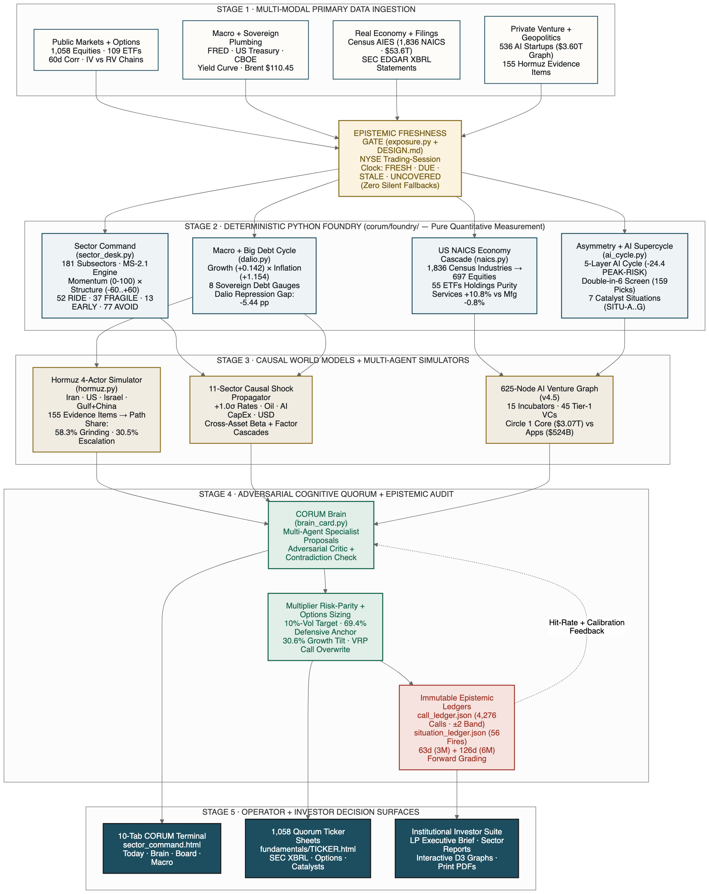
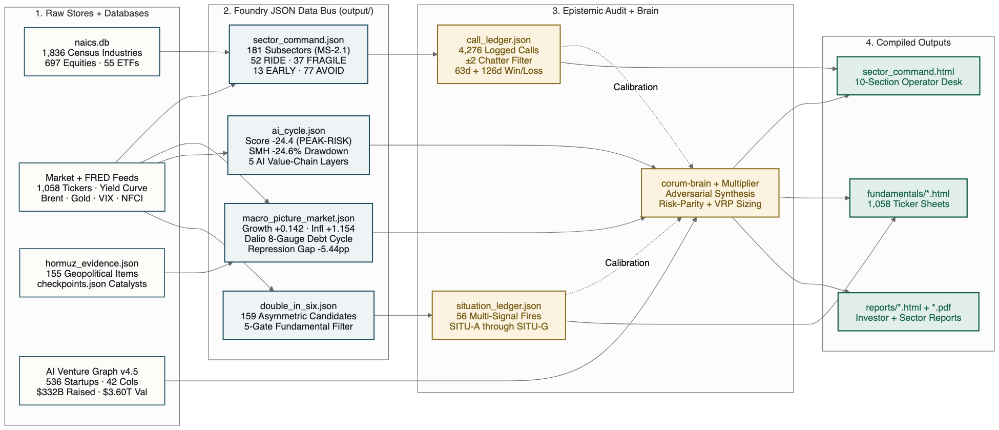

CORUM: Institutional Platform Overview & Empirical State of the Economy
Publication Date: October 20, 2026
Prepared by: CORUM Research & Macro-Sector Intelligence Desk
Audience: External Institutional Partners, Research Subscribers & Strategic Counterparties
Platform Release: CORUM v4.5 · Sector Command (MS-2.1) · US NAICS Cascade (AIES 2024) · WorldModel (v0.8) · AI Venture Graph (625 Nodes)
IMPORTANT: Advisory & Epistemic Mandate: CORUM (Cognitive Quorum) is an advisory and paper-only multi-strategy research, macro-intelligence, and decision-support platform. It never executes trades autonomously. Every quantitative metric, regime read, and sector classification in this report is generated from live point-in-time market feeds, Federal Reserve (
FRED/ALFRED) vintage series, US Census Bureau (AIES) bulk filings, SECXBRLpanels, and pre-registered prediction ledgers as of October 20, 2026.
Part I: What CORUM Is — An External Guide to the "Cognitive Quorum" Platform
1. Executive Summary & Architectural Vision
Most financial research platforms fail in one of two ways: either they rely on discretionary human narratives that drift with market sentiment and never track their own denominator of failed calls, or they rely on opaque black-box machine learning models overfitted to non-stationary historical price noise.
CORUM (Cognitive Quorum, rooted in Corum/) was engineered to solve both failure modes. It is an integrated, AI-operated multi-strategy investment and macroeconomic intelligence platform modeled on two institutional pillars:
- Bridgewater-Style Believability-Weighted Macro & Causal Graphs: Macro shocks, central bank reaction functions, debt-cycle gauges, and supply-chain bottlenecks propagate across an explicit, evidence-graded causal network (
agentic-bridgewater/andcorum/foundry/). - Millennium-Style Independent Strategy Pods ("A Firm of Agents"): Every investment strategy—across sector momentum, swing-length percentile reversal, options income (covered calls, cash-secured put wheels, weekly collars), 6-month asymmetric doublers, and 3-to-5-year 10x/20x multibaggers—operates as a standardized, self-contained agent built from a single contract (
corum/contracts.py). Each agent executes four deterministic moves:Perceive → Reason → Decide → Conclude.
1.2 End-to-End Information Flow & Data-Bus Pipeline
To illustrate how raw market, macroeconomic, and regulatory telemetry transforms into audited capital allocation decisions, the two architecture diagrams below trace (A) the 5-stage system-wide information flow and (B) the deterministic Foundry data-bus, contract schema, and epistemic audit loop:


2. The Seven Epistemic & Engineering Standing Rules
To prevent hallucination, look-ahead bias, and narrative drift, every module in CORUM is governed by seven non-negotiable engineering invariants (enforced by automated test suites in Corum/tests/ and Corum/CLAUDE.md):
| # | Standing Rule | Technical Implementation in CORUM | Why It Matters for External Users |
|---|---|---|---|
| 1 | Real Data Only (Fail-Loud Feeds) | Zero synthetic or interpolated price fallbacks anywhere in prices.py or dalio.py. If FRED or market feeds fail after retries, the build halts or flags FAILED—never inventing a number. |
Eliminates silent data corruption and "phantom backtest alpha." |
| 2 | Own-History Percentiles, Never Fixed Thresholds | An arbitrary "+22% in 6m = overheated" threshold calibrated on SPY mis-flags high-beta Biotech or Semiconductors. Every regime, volatility, and macro gauge is scored against its own historical distribution (MIN_PCTILE_N = 40). |
Normalizes cross-asset comparisons across 181 disparate subsectors. |
| 3 | Absence Is Named, Never Silenced | Every field carries an explicit state (DESIGN.md): FRESH, DUE, STALE, MISSING, FAILED, PARKED, PARTIAL n/m, or UNCOVERED. A blank news feed reads UNCOVERED, never "quiet." |
Prevents the fatal analytical error of mistaking missing data for benign fundamentals. |
| 4 | Forced Denominators (n on Every Claim) |
Every subsector call (4,276 logged entries in call_ledger.py), situation fire (56 instances in situation_ledger.py), and probability forecast is automatically graded at fixed forward windows (+5d, +21d, +30d, +63d, +90d). Even rejected setups are graded. |
Transforms subjective "conviction" into empirically audited hit rates with explicit sample sizes. |
| 5 | Falsifiability as a Hard Gate | A signal or model that cannot say NO is deleted. When internal evaluation (Gate G1) showed gradient-boosted ML return fitting did not beat simple baselines out-of-time, ML fitting was cancelled system-wide in favor of research-calibrated, cited factor scoring (SCORING_SYSTEM_DESIGN.md). |
Protects users from overfitted quantitative mirages. |
| 6 | Measured vs. Hand-Scored Separation | Hard econometric measurements (e.g., FRED debt-to-GDP, interest outlays, credit spreads) are strictly segregated from qualitative assessments (e.g., reserve-currency status, internal conflict), which are tagged measured: False and never blended into a composite index. |
Prevents "turning a qualitative vibe into a number with decimal places." |
| 7 | LLM Proposes, Deterministic Code Disposes | LLMs synthesize news, draft dossiers, and challenge theses, but every citation is span-checked, and all position sizing, liquidity filtering (option spread ≤ 10%, open interest ≥ 200), and risk gating are 100% deterministic code. | Combines frontier AI reasoning breadth with institutional risk discipline. |
3. Core Platform Capabilities & Intelligence Modules
3.1 The Sector Command Foundry (181 Subsectors · 1,058 Equities · 109 ETFs)
Built in corum/foundry/sector_command.py and rendered via sector_desk.py, the Sector Command Board decomposes the global investable universe into 181 granular subsectors across 20 parent sectors and thematic clusters (including Technology, Healthcare, Consumer, Industrials, Financials, Materials, Energy, Real Estate, Regions, Cell & Gene Therapy, Space, Nuclear, Robotics, Defense, Neuro & Neurotech, Quantum, Crypto, Longevity, and Utilities).
For every subsector row, CORUM computes:
- Multi-Horizon Return & Breadth Profiles:
1m,3m,6m,9m,12m, and24mreturns, constituent breadth above the 200-day moving average, and internal dispersion. - Momentum Sustainability (
MS-2.1) & Banded Calls: Rather than chasing raw price momentum,MS-2.1evaluates momentum alongside trend exhaustion, own-history overheat percentiles, and causal macro graph tilts (graph_tilt), assigning each subsector to one of four calls (with hysteresis bands to eliminate daily chatter flips):RIDE(Green Circle): Confirmed trend with sustainable breadth and supportive or neutral macro drivers.FRAGILE(Orange Diamond): Strong prior momentum now exhibiting exhaustion, severe drawdown unrecovered state, or adverse macro/valuation vulnerability.EARLY(Blue Square): Bottoming or inflecting subsector with improving breadth/catalysts prior to full trend confirmation.AVOID(Hollow Grey): Broken technicals, negative momentum, or structural macro headwinds.
- Portfolio Action Buckets & Option Strategy Matrix: Maps every subsector into
BUY,HOLD,OVERHEATED, orREDUCE, paired with implied-volatility percentile ranks (iv_proxy_pctilefrom the daily option-chain recorderchain_recorder.py) to recommend optimal defined-risk option structures.
3.2 The US Economy NAICS Cascade (naics_tree.py & db/naics.db)
Standard stock market indices (S&P 500, Nasdaq 100) are heavily skewed toward mega-cap technology and misrepresent the physical and service economy. CORUM ingests the US Census Bureau's Annual Integrated Economic Survey (AIES00BASIC) directly from Census bulk files, organizing 1,836 NAICS industry nodes from 2-digit sectors down to 6-digit national industries and 7-digit hospital splits:
- Tracks
$53.60 trillionin US employer firm revenue,138.12 millionemployees, and$9.42 trillionin annual payroll. - Computes year-over-year industry revenue growth alongside rigorous standard errors (
growth_se) and 90% statistical significance flags (Z = 1.645) based on Census coefficients of variation (CV). - Maps 697 public equities and 55 sector ETFs directly onto their exact 6-digit NAICS nodes, calculating holdings-verified ETF purity scores (for example, proving that
ITBhas a69.8%pure residential construction weight in NAICS236, whereasXHBhas only40.3%purity due to retail and building-products dilution; or thatIHEcarries89.5%pharmaceutical purity in NAICS325412vs.21.4%for equal-weightXPH).
3.3 Causal Macro Graph, Dalio Debt Gauges & Pre-Registered WorldModel
CORUM links top-down macroeconomics to bottom-up subsectors through three connected engines:
- Live FRED Big Debt Cycle Monitor (
dalio.py): Tracks 9 live FRED series with historical percentile distributions (N = 86 to 12,593 observations) to answer Ray Dalio's central debt-cycle question: Is the real cost of money below nominal GDP growth (self-liquidating financial repression) or above it (compounding debt crisis)? - Actor-to-Node Causal Lever Registry (
actors.py&machine.py): Audits how exogenous actors (the Federal Reserve, OPEC+, US Executive tariffs, China stimulus, Hyperscaler AI capex) pull specific macro graph nodes and propagate linear shocks across all 181 subsectors. - Evidence-Linked Geopolitical & Policy
WorldModel(worldmodel/): Models decision-making bodies via dated evidence records (155cited items iniran-conflict-v0.7/v0.8), binding authorization edges, and conditional reaction rules across active scenarios: Strait of Hormuz (iran-v0.8), FOMC Rate Path (fomc-v0.1b), US Midterm Elections (us-midterms-v0.1), Global Central Banks (central-banks-v0.1), US-China Trade/Summit (us-china-v0.1), Russia-Ukraine (russia-ukraine-v0.2), and Hyperscaler AI Capex (ai-capex-v0.1). Every forecast is pre-registered in a cryptographic hash-sealed ledger and scored via Brier score and log-loss against live prediction markets (Kalshi,Polymarket) and a naive persistence baseline.
3.4 Asymmetric Equity Engines (corum-multiplier/) & The Independent CORUM Brain (corum-brain/)
Double-in-Six(corum-multiplier/engines/double-in-six/): Screens and scores 159 high-velocity candidates capable of +100% appreciation within 6 months, pairing catalyst verification with a coherent 6-month path downside model (CM-PROB-003) that explicitly estimates P(-30%) and P(-50%) drawdown risk.Multibagger 10x/20x(corum-multiplier/engines/multibagger/): Trained on a point-in-time SECXBRLpanel across~4,000US listings (achieving a 0.84 out-of-time AUC and 4.7x top-decile lift), adjusted by a listing-survival model trained on both surviving and delisted SEC filers to bound P(-80% or delisting) alongside "the 10x equation" (required revenue CAGR vs. historical base rates for same-size firms).CORUM Brain(corum-brain/): An independent decision engine (running on:8790) that ingests all candidates from the Sector Command board, runs a deterministic scorer and span-checked Claude deliberator, applies hard portfolio gates (liquidity, cycle stage, earnings window, concentration), sizes surviving positions via quarter-Kelly on shrunk inputs, and publishes the top 5 ranked actions for the next market open—complete with the strongest counter-argument and explicit invalidation level.
3.5 The 625-Node Private AI Startup & Venture Graph (v4.5 Institutional Edition)
Complementing public market coverage, CORUM maintains a proprietary Multi-Relational AI Startup & Venture Graph Database (CORUM_AI_Startup_Executive_Teaser_Oct2026.md) tracking 536 private and newly public AI companies across 29 sub-segments (Circle 1 Core AI, Circle 2 Enterprise Vertical AI, and Circle 3 Consumer AI), 45 Tier-1 VC syndicates, 15 feeder incubators (Y Combinator, a16z Speedrun, HF0, SPC, Conviction, AI Grant), and 1,780+ directed capital, compute, and model-dependency edges representing $332.02 billion in capital raised and $3.60 trillion in combined valuation.
Part II: Trends in the Economy — October 2026 Empirical Read
CORUM synthesizes macroeconomic data across five interlocking layers: (1) Monetary Policy & the Big Debt Cycle, (2) The $53.60T Real US Economy (NAICS Census Cascade), (3) Geopolitical Supply Shocks & Energy, (4) Public Equity Sector Rotation across 181 Subsectors, and (5) The $3.60T AI Supercycle & Venture Frontier.
4. Macroeconomic Regime & Big Debt Cycle: "Late-Cycle Financial Repression Tested by an Active Fed Hike"
4.1 The Growth × Inflation Four-Box & The September 2026 Fed Reversal
As of October 20, 2026, CORUM's MacroObserverAgent reads the US macro regime in an inflationary expansion (Growth UP +0.142 · Inflation UP +1.154), with environmental probabilities heavily skewed toward INFLATION_RISING (57.6%) and GROWTH_RISING (20.9%) versus GROWTH_FALLING (15.8%) and INFLATION_FALLING (5.7%).
Crucially, the dominant macro narrative of 2025 ("immaculate disinflation and continuous rate cuts") broke in Q3 2026:
- Following three rate cuts in late 2025, persistent services expansion and Middle East energy supply shocks forced the Federal Reserve to reverse course and deliver a 25 bps rate hike on September 17, 2026, raising the federal funds target range to
3.75%–4.00%. - At the September FOMC meeting, 16 of 18 participants projected at least one additional hike before year-end—making the upcoming October 27–28, 2026 and December 8–9, 2026 FOMC meetings (
worldmodel/scenarios/fomc-v0.1b.json: model15%Oct hike,73%Dec hike) the pivotal macro catalysts of Q4 2026.
4.2 Dalio's Big Debt Cycle Gauges (Measured via Live FRED Series)
Despite the Fed's September hike, CORUM's live Big Debt Cycle gauges (dalio.py) reveal a striking structural truth: the US economy remains in deep Financial Repression (-5.44 pp repression gap) where nominal GDP growth (>6%) outpaces the real cost of money (+0.87%), eroding the massive federal debt stock in real terms.
| Measured Big Debt Cycle Gauge | Live Reading (Oct 20, 2026) |
FRED Series ID | Own-History Percentile | Historical Range (Min / Median / Max) |
Cycle Interpretation & Economic Meaning |
|---|---|---|---|---|---|
| Federal Debt / GDP | 122.59% |
GFDEGDQ188S |
97.9th (n=241) |
30.60% / 59.19% / 132.66% |
Late-Cycle Stock: Near post-WWII peak; leaves minimal fiscal buffer if real rates rise above growth. |
| Federal Interest Outlays / GDP | 3.93% |
A091RC1Q027SBEA / GDP |
76.7th (n=318) |
1.83% / 2.73% / 4.99% |
Elevated Flow Burden: Nearly 4% of US output goes solely to servicing federal debt. |
| Real Policy Rate | +0.87% |
DFEDTAR mid − PCEPILFE YoY |
42.0th (n=800) |
-5.49% / +1.57% / +10.24% |
Barely Positive: Even after the Sept 17 hike to 3.75%–4.00%, real short rates sit below their historical median (+1.57%). |
| The Repression Gap (Dalio's Central Test) | -5.44 pp |
Real Policy Rate − Nominal GDP YoY | 33.8th (n=800) |
-21.23 / -4.45 / +5.84 pp |
Deeply Repressive: Nominal GDP growth outruns real interest rates by 5.44 pp, inflating away debt in real terms—bullish for nominal scarce/equity assets, punitive for cash/bonds. |
| Household Debt Service Ratio | 11.11% |
TDSP |
20.9th (n=86) |
9.05% / 11.76% / 15.85% |
Contained Aggregate Private Burden: Prime households locked in fixed-rate mortgages, insulating aggregate debt service despite lower-income credit card stress. |
Treasury Curve (10Y - 2Y) |
+0.33% |
T10Y2Y |
31.3rd (n=12,593) |
-2.41% / +0.77% / +2.91% |
Positively Sloped: Re-steepened with the 10Y Treasury yield (^TNX) at 5.12%. |
Corporate Credit Spread (Baa - 10Y) |
1.46% |
BAA10Y |
2.6th (n=10,199) |
1.16% / 2.13% / 6.16% |
Historically Tight: Credit markets are pricing zero systemic default stress (2.6th percentile over 40 years). |
| Unemployment Rate | 4.20% |
UNRATE |
20.3rd (n=800) |
— | Tight Labor Market: Supports nominal wage and service-sector demand. |
| Fed Balance Sheet (6m Change) | +0.72% |
WALCL |
43.0th |
— | Expanding: Quantitative tightening (QT) has ended; liquidity is mildly net-positive. |
NOTE: Three Competing Macro Scenarios on the CORUM Board:
BASE("Repression Persists"): Inflation hovers near~3%, nominal GDP holds>6%, credit spreads stay<2.0%, and the repression gap remains deeply negative (<-3.0 pp). Nominal cash-flow compounders and real assets continue to outperform.BEAR("Supply Shock Forces the Fed's Hand"): Hormuz energy disruption (Brent $110.45/bbl) pushes Core PCE above3.6%, forcing consecutive hikes in Oct/Dec 2026 that drive the real policy rate>1.0%, widen Baa spreads>2.0%, and close the repression gap (>-2.0 pp), turning the122.6%federal debt load into an acute fiscal-monetary squeeze.BULL("One-and-Done Supply Unwind"): Energy risk premium fades, Core PCE rolls below2.8%, the Sept 2026 hike proves "one-and-done," and China stimulus lifts global cyclicals while the repression gap stays wide.
5. Real Economy Trends: The $53.60 Trillion US NAICS Cascade
While financial media fixates on mega-cap tech multiples, CORUM's US Census AIES NAICS Cascade (db/naics.db) reveals a profound two-speed structural bifurcation across the $53.60 trillion real US economy (138.12M employees, $9.42T payroll): Healthcare, Financial Services, Digital Infrastructure, and Air/Express Logistics are booming at +6% to +11% annual rates, while physical Goods Manufacturing, Primary Metals, Trucking, and Discretionary Retail are stagnating or contracting.
5.1 Complete 2-Digit NAICS Sector Breakdown (US Employer Firms)
| NAICS Code | US Economic Sector | Revenue ($B) |
Prior Year Revenue ($B) |
YoY Growth (%) |
Std. Error (±%) |
Stat. Sig. (90%) |
Employees (Millions) |
Annual Payroll ($B) |
Structural Trend Read |
|---|---|---|---|---|---|---|---|---|---|
42 |
Wholesale Trade | $11,915.3B |
$11,745.3B |
+1.5% |
0.8% |
Yes | 6.32M |
$570.2B |
Sluggish volume growth below inflation |
44-45 |
Retail Trade | $7,106.7B |
$7,019.3B |
+1.2% |
0.4% |
Yes | 17.71M |
$650.6B |
Real contraction after inflation; consumer exhaustion |
52 |
Finance & Insurance | $7,068.3B |
$6,493.5B |
+8.8% |
0.1% |
Yes | 7.18M |
$917.1B |
Surge in insurance pricing, capital markets & higher yield income |
31-33 |
Manufacturing | $6,980.5B |
$7,038.3B |
-0.8% |
0.1% |
Yes | 12.01M |
$890.8B |
Industrial goods contraction outside AI/defense pockets |
62 |
Health Care & Social Assistance | $3,878.5B |
$3,525.1B |
+10.8% |
0.6% |
Yes | 23.09M |
$1,474.8B |
#1 Growth & Employment Engine in the US economy |
23 |
Construction | $3,239.5B |
$3,102.6B |
+4.4% |
1.9% |
Yes | 7.72M |
$594.2B |
Led by Heavy & Civil Engineering (+11.0%) & data centers |
54 |
Professional, Scientific & Technical | $2,999.1B |
$2,793.6B |
+4.9% |
0.3% |
Yes | 11.09M |
$1,108.1B |
High-wage R&D, IT consulting, legal & engineering services |
51 |
Information | $2,409.9B |
$2,263.3B |
+3.1% |
0.4% |
Yes | 4.05M |
$563.1B |
Led by Data Processing/Hosting (+10.2%) & Software (+10.2%) |
56 |
Admin, Support & Waste Mgmt | $1,457.0B |
$1,424.0B |
+4.1% |
0.4% |
Yes | 12.45M |
$674.7B |
Resilient waste remediation; softer temporary staffing |
48-49 |
Transportation & Warehousing | $1,455.8B |
$1,369.0B |
+6.3% |
0.7% |
Yes | 6.21M |
$389.8B |
Sharp split: Couriers (+29.5%) & Air (+15.6%) vs. Trucking (-4.3%) |
72 |
Accommodation & Food Services | $1,295.5B |
$1,252.0B |
+2.6% |
0.6% |
Yes | 14.57M |
$394.1B |
Decelerating restaurant traffic as middle-tier consumers trade down |
53 |
Real Estate & Rental/Leasing | $986.0B |
$957.2B |
+7.6% |
0.8% |
Yes | 2.42M |
$164.7B |
Driven by industrial/datacenter leasing & residential rents |
81 |
Other Services (excl. Public Admin) | $816.5B |
$743.5B |
+8.9% |
0.6% |
Yes | 4.11M |
$196.1B |
Repair, maintenance & civic/grantmaking organizations (+12.7%) |
22 |
Utilities | $790.5B |
$765.9B |
+2.3% |
0.4% |
Yes | 0.72M |
$89.9B |
Regulated electric power ($612.8B) entering AI load inflection |
21 |
Mining, Quarrying & Oil/Gas | $572.1B |
$581.6B |
-1.6% |
0.9% |
Yes | 0.53M |
$59.7B |
Capital discipline & lower prior-period gas prices; oil now rebounding |
71 |
Arts, Entertainment & Recreation | $401.2B |
$371.9B |
+7.7% |
1.0% |
Yes | 2.68M |
$122.9B |
Experiential spending & live entertainment resilience |
55 |
Management of Companies | $125.3B |
$104.1B |
+20.4% |
2.5% |
Yes | 4.39M |
$523.4B |
Corporate holding & enterprise treasury income expansion |
61 |
Educational Services (Private) | $101.0B |
$94.1B |
+9.5% |
2.1% |
Yes | 0.89M |
$33.8B |
Technical training & private educational services |
| Total | Measured US Employer Universe | $53,598.7B |
$51,644.4B |
+3.78% |
— | — | 138.12M |
$9,418.2B |
Services/Healthcare/Finance Boom vs. Goods Stagnation |
5.2 Subsector Divergence Inside the Real Economy (3-Digit NAICS Leaders vs. Laggards)
Drilling one level deeper into the 3-digit NAICS subsectors exposes the exact engines of economic expansion and contraction:
- Fastest-Growing US Subsectors (Statistically Significant at 90%):
- Couriers & Messengers (
NAICS 492):+29.5%YoY (±0.9%,$160.6Brevenue,1.02Memployees) — e-commerce last-mile fulfillment and express parcel networks. - Management of Companies (
NAICS 551):+20.4%YoY (±2.5%,$125.3Brevenue,4.39Memployees). - Air Transportation (
NAICS 481):+15.6%YoY (±1.0%,$335.1Brevenue) & Support Activities for Transportation (NAICS 488):+15.3%YoY (±2.0%,$280.6Brevenue). - Hospitals (
NAICS 622):+12.1%YoY (±0.7%,$1,610.5Brevenue,6.72Memployees), Nursing & Residential Care (NAICS 623):+10.8%YoY ($327.2B), and Ambulatory Health Care (NAICS 621):+9.8%YoY ($1,618.0B,9.03Memployees) — driven by demographic aging and post-pandemic surgical/utilization catch-up. - Heavy & Civil Engineering Construction (
NAICS 237):+11.0%YoY (±2.7%,$491.3Brevenue,1.10Memployees) — grid infrastructure, power substations, and industrial reshoring. - Data Processing, Hosting & Cloud (
NAICS 518):+10.2%YoY (±2.8%,$395.1Brevenue) & Software/Publishing (NAICS 511):+10.2%YoY (±0.7%,$642.2Brevenue). - Securities, Commodity Contracts & Investments (
NAICS 523):+10.1%YoY (±0.7%,$916.8Brevenue).
- Couriers & Messengers (
- Contracting US Subsectors (Industrial & Freight Recession Pockets):
- Primary Metal Manufacturing (
NAICS 331):-8.3%YoY (±0.3%,$273.4Brevenue). - Truck Transportation (
NAICS 484):-4.3%YoY (±0.7%,$402.8Brevenue,1.67Memployees) — domestic over-the-road freight recession contrasting with booming air/courier parcel networks. - Electrical Equipment & Appliance Mfg (
NAICS 335):-4.2%YoY (±0.6%,$195.0Brevenue) & Transportation Equipment Mfg (NAICS 336):-4.2%YoY (±0.1%,$1,104.6Brevenue,1.68Memployees). - Wood Products (
NAICS 321,-3.3%YoY) and Furniture & Home Furnishings Stores (NAICS 442,-2.7%YoY) — frozen housing turnover under5.12%10-year Treasury yields.
- Primary Metal Manufacturing (
6. Geopolitical Supply Shocks & The Energy Complex (October 2026)
CORUM's live market monitor (macro_picture_market.json) and WorldModel geopolitical engine (worldmodel/) highlight an active energy and maritime supply shock as of October 20, 2026:
- Strait of Hormuz Conflict (
iran-conflict-v0.7,155Cited Evidence Items): Path sampling across 16 decision-making actors places58.3%path share on Scenario C (No talks, grinding exchange), ahead of18.6%(No talks, lull),17.6%(Talks open, shooting continues), and5.6%(Talks open, shooting fades). - Energy & Refining Price Transmission:
- Brent Crude (
BZ=F):$110.45 / bbl(+10.1%over 1 month). - WTI Crude (
CL=F):$99.21 / bbl(+3.6%over 1 month). - 3-2-1 Refining Crack Spread (
CRACK):$101.91(87.3rd1-year percentile, range$30.36–$117.92). - Market Impact: Refining and integrated energy equities are among the strongest 12-month performers on the CORUM board (
Oil Refiners / CRAK+84.4%12m,+41.5%6m;Marathon Petroleum / MPC+18.1%1m at$475.04;Phillips 66 / PSX+11.2%1m at$291.03;Valero / VLO+10.2%1m at$433.42;Integrated Energy / XLE+62.6%12m), while fuel-sensitive Airlines (JETS-9.7%1m) face acute margin compression.
- Brent Crude (
7. Public Market Trends: What CORUM's 181-Subsector Board Shows Today
Across the 181 subsectors tracked on the Sector Command board on October 20, 2026, CORUM's MS-2.1 sustainability engine classifies:
52Subsectors (28.7%) inRIDE(Confirmed Sustainable Uptrend)37Subsectors (20.4%) inFRAGILE(Exhausted, Unrecovered Drawdown, or High Vulnerability)13Subsectors (7.2%) inEARLY(Early Inflection / Bottoming)77Subsectors (42.5%) inAVOID(Broken Trend / Adverse Macro)- Portfolio Action Buckets:
27BUY·54HOLD·20OVERHEATED·78REDUCE
7.1 Cross-Sector Decision Distribution Across All 20 Parent Groups
| Parent Sector / Cluster | Total Subsectors | RIDE (Green) |
FRAGILE (Orange) |
EARLY (Blue) |
AVOID (Grey) |
Dominant Economic & Market Trend (October 2026) |
|---|---|---|---|---|---|---|
| Regions (Global Country ETFs) | 20 | 10 | 4 | 1 | 5 | Strong international rotation led by Taiwan (+72.5% 12m), Brazil (+51.0%), Colombia (+50.9%), Poland (+39.8%), Greece (+33.2%), Canada (+22.7%), and Japan (+21.4%) (BUY). |
| Healthcare | 18 | 11 | 3 | 1 | 3 | Strongest Domestic Sector: Managed Care/Hospitals (IHF +32.6% 6m), Healthcare Services (XHS +30.6% 6m), Drug Distributors (+35.3% 12m, BUY), and GLP-1 (HRTS +18.6% 12m, BUY). |
| Consumer | 17 | 6 | 1 | 3 | 7 | Defensive bifurcation: Big-Box/Warehouse Clubs (+28.2% 12m, BUY), Staples (XLP, BUY), and Off-Price Retail (+25.4% 12m, BUY) win as consumers trade down; broad discretionary & restaurants stay AVOID. |
| Technology | 15 | 2 | 8 | 1 | 4 | Major Cycle Digestion: 8 of 15 tech rows are FRAGILE (HOLD) inside an unrecovered semi drawdown (SMH -15.2% below high); only Megacap Platforms (MAGS, BUY) and Cloud Infra (SKYY, OVERHEATED) hold RIDE. |
| Industrials | 14 | 5 | 5 | 1 | 3 | Marine Shipping (BOAT +79.2% 12m, BUY) and Industrial Distributors (+36.9% 12m, BUY) lead RIDE; Grid Equipment & Freight Logistics sit in FRAGILE consolidation. |
| Financials | 13 | 7 | 2 | 2 | 2 | Broad Financial Strength: Reinsurance (+36.7% 12m), Free Cash Flow Yield (COWZ +28.0%), Life Insurers (+24.7%), Insurance (IAK +18.4%), P&C (KBWP), and CLOs (JAAA) in RIDE; Money-Center Banks (XLF) & Capital Markets (IAI) in EARLY. |
| Materials | 11 | 3 | 2 | 0 | 6 | Steel (SLX +42.0% 12m, BUY) and Broad Materials (XLB, BUY) hold RIDE; battery metals and specialty chemicals remain AVOID. |
| Real Estate | 9 | 1 | 1 | 2 | 5 | Pressured by 5.12% 10Y Treasury yields; 5 of 9 REIT subsectors are AVOID. |
| Cell & Gene Therapy | 8 | 3 | 2 | 0 | 3 | "Picks-and-shovels" monopoly surge: CGT Tools & Reagents (+61.5% 6m), Cryogenic Cold Chain (+56.3% 6m), and CGT CDMOs (+36.3% 6m) are top RIDE (OVERHEATED) leaders. |
| Energy | 7 | 4 | 1 | 0 | 2 | Oil Refiners (CRAK +84.4% 12m), Integrated Energy (XLE +62.6% 12m), and Natural Gas (FCG +46.3% 12m, BUY) ride the Hormuz supply shock; Solar (TAN) remains AVOID. |
Space (8), Nuclear (7), Robotics (6), Defense (5), Crypto (5), Quantum (3) |
34 | 0 | 6 | 0 | 28 | Speculative/high-beta hardware themes (Quantum Photonics +496.4% 12m, Satellites +59.0% 12m) suffered sharp -10% to -23% 1-month pullbacks and are flagged FRAGILE or AVOID. |
7.2 Deep Dive on the Public AI & Semiconductor Cycle (ai_cycle.py & ai-supercycle/)
One of CORUM's most important empirical findings in October 2026 concerns the AI Hardware & Semiconductor Trade:
- The AI Complex Is Inside an Unrecovered Severe Drawdown, Not Past One:
- Measured on
SMH(the longest liquid semiconductor wrapper, history from June 2000), the drawdown that began on June 22, 2026 hit-24.62%at its July 29, 2026 trough and remains unrecovered (-15.23%below its high). - Across
SMH's 26-year history (17drawdown episodes $\ge 10%$),11were routine (recovering inside 150 days) and6were severe (deeper than30%or taking $>150$ days to recover, led by the2000–2017dot-com bust at-85.9%over6,321days and2021–2023at-45.3%over563days). - Over the past 12 months, AI memory and optics posted historic parabolic runs—NAND Flash (
+716.5%12m), Quantum Photonics (+496.4%12m), Memory (+343.3%12m), Hard-Disk Drives (+200.6%12m), and AI Networking & Optics (+106.9%12m)—followed by-11%to-23%1-month corrections (FRAGILE).
- Measured on
- Historical Supercycle Stage Estimator Reads
PEAK-RISK(-24.4Normalized Score in Oct 2026):- By scoring 43 current AI indicators against 7 historical infrastructure buildouts (Semiconductors, Dot-Com/Telecom, Mobile, Cloud, British/US Railway Mania, Electrification),
ai-supercycle/moved from-13(LATE-CYCLE) in July 2026 to-24.4(PEAK-RISK) in October 2026. - Classic pre-bust signals are now present—hyperscaler capex-to-revenue divergence (
$700B+annual physical capex commitments), circular vendor financing, off-balance-sheet GPU debt vehicles, and BIS/central-bank warnings—coexisting with genuine physical bottlenecks in gigawatt power substations and HBM memory, while corporate credit spreads (Baa–10Yat1.46%) are not yet pricing credit stress.
- By scoring 43 current AI indicators against 7 historical infrastructure buildouts (Semiconductors, Dot-Com/Telecom, Mobile, Cloud, British/US Railway Mania, Electrification),
8. Private Venture & Technological Frontier Trends (CORUM AI Graph v4.5)
While public semiconductor multiples digest their 2024–2026 run-up, CORUM's 625-Node AI Startup & Venture Graph Database (AI_Startup_Landscape_Three_Circles_Oct2026_Report.md) documents where $332.02 billion in private capital ($3.60 trillion combined valuation across 536 companies) is migrating next:
8.1 Capital Concentration vs. Application Velocity Across the Three Circles
| Architectural Layer | Segments | Companies (%) |
Early/Mid Startup Stage (Pre-Seed–C) |
NY Office Footprint | Total Capital Raised ($B) |
Share of Capital | Combined Valuation ($B) |
Valuation / Raised Multiple |
|---|---|---|---|---|---|---|---|---|
| Circle 1 — Core AI & Infrastructure | 1A–1I (9) |
160 (29.9%) |
114 |
24 (11.9%) |
$264.83B |
79.8% |
$3,074.38B |
11.61x |
| Circle 2 — Enterprise & Vertical AI | 2A–2N (14) |
309 (57.6%) |
266 |
163 (80.7%) |
$54.11B |
16.3% |
$433.08B |
8.00x |
| Circle 3 — Consumer & Prosumer AI | 3A–3F (6) |
67 (12.5%) |
34 |
15 (7.4%) |
$13.08B |
3.9% |
$91.19B |
6.97x |
Unified Application Layer (C2 + C3) |
2A–3F (20) |
376 (70.1%) |
300 (72.5%) |
178 (88.1%) |
$67.19B |
20.2% |
$524.27B |
7.80x |
| Total Tracked AI Universe | 1A–3F (29) |
536 (100%) |
414 (100%) |
202 (100%) |
$332.02B |
100.0% |
$3,598.66B |
10.84x |
8.2 Five Structural Frontier Trends Reshaping the Real Economy (2026–2028)
- From Text LLMs (
1A) to 3D World Models & Physical AI (Segment 1C—$103.23BValuation):- Autoregressive text tokens cannot plan in 3D physical space. Venture capital has flooded into 19 World Model & Physical AI foundation labs (
$14.31Braised) led by Yann LeCun'sAMI Labs($1.03BSeed at$4.53Bvaluation building non-generativeV-JEPAworld models), Fei-Fei Li'sWorld Labs($1.23Braised at$5.0Bvaluation shipping persistent 3D engineMarble),General Intuition($6.2B),Decart($3.1B), and generalist robotics brainsFigure AI($39.0B),Skild AI($14.0B),Wayve($8.6B), andPhysical Intelligence($5.6B).
- Autoregressive text tokens cannot plan in 3D physical space. Venture capital has flooded into 19 World Model & Physical AI foundation labs (
- Agent Infrastructure (
1H) & Serverless Inference Clouds (1F) Dominate Developer GTM:- CORUM's scrape of
1,700SF Tech Week 2026 events (69hackathons,136sponsors) and1,401Y Combinator startups (W25–F26,86.8%AI-native) shows that over 62% of ecosystem developer sponsorship comes from Agent/Browser/Memory infrastructure (Supabase,LangChain,Browserbase,Mem0,KERNEL,Mastra) and Serverless Inference Clouds (Fireworks AI$17.5B,Baseten$13.0B,Together AI$3.3B,Modal$2.5B), while RL/evals leaderAfterQuery(YC W25) reached a$3.20Bvaluation in 9 months (the fastest unicorn in YC history).
- CORUM's scrape of
- Autonomous Epistemic Science & Drug Discovery (
Segment 1B—$18.42BValuation):- Autonomous AI scientist platforms such as
FutureHouse/Edison Scientific(Kosmos) now read1,500+papers and execute42,000+lines of code per run (~6 monthsof PhD research), whileUnreasonable Labspairs ontological knowledge graphs with adversarial multi-agent panels (Proposer vs. Falsifier vs. Adjudicator) alongsideIsomorphic Labs($6.0B),Chai Discovery($3.8B), andXaira($2.7B).
- Autonomous AI scientist platforms such as
- AI for Silicon, Physics & Industrial Engineering (
Segments 2K & 1E—$9.85BValuation):- DeepMind
AlphaChipspinoutRicursive Intelligence($4.0Bvaluation in 4 months) compresses chip floorplanning from 2 years to 1 week;PhysicsX($2.4B) runs multiphysics CFD/FEA simulations in milliseconds; andNominal($1.0B) automates mission-critical hardware telemetry for defense and aerospace.
- DeepMind
- Personalized AI Operating Systems (
Meta Muse,Instinct,Mem0) & Disintermediation of15%–25%Aggregators:- The Oct 2026 bankruptcy of
Character.AIand wind-down ofDotproved that stateless or purely conversational consumer AI hits a2.2%subscription ceiling. The winning architecture combines Continuous Personal Context Graphs (Active Memory) with transactional execution (Segment 3E)—led byMeta Museand Mira Murati'sInstinct($10.0Bvaluation). - By connecting directly to supplier property/inventory systems (
Oracle Opera,Mews,Sabre) via AnthropicMCPand GoogleUniversal Cart (UCP)over1.5%agentic payment rails (Stripe/Skyfire), personal AI agents bypass15%–25%toll-booth aggregators likeBooking.com(NASDAQ: BKNG,~$160Bmarket cap)—delivering a10%instant discount to consumers while raising net supplier revenue by+10.6%.
- The Oct 2026 bankruptcy of
9. Summary Synthesis: Positioning Across the Economic Landscape
| Economic & Market Dimension | Current Empirical State (October 20, 2026) |
High-Conviction Beneficiaries (RIDE / BUY / Structural Tailwinds) |
Key Vulnerabilities (FRAGILE / AVOID / Structural Headwinds) |
|---|---|---|---|
| Macro & Debt Cycle | Late-Cycle Financial Repression (-5.44 pp gap; Debt/GDP 122.6%; Fed hiked to 3.75%–4.00% on Sept 17; 10Y at 5.12%; Baa spread tight at 1.46%) |
Free Cash Flow Yield (COWZ), Insurance & Reinsurance (IAK, KBWP, Life), Structured Credit (JAAA), Megacap Platforms (MAGS) |
Long-duration unprofitable growth, unhedged Commercial & Residential REITs, regional banks if credit spreads widen >2.0% |
US Real Economy ($53.60T NAICS) |
Services/Healthcare Boom vs. Goods Contraction (Healthcare +10.8%, Finance +8.8%, Couriers +29.5%, Air +15.6% vs. Mfg -0.8%, Trucking -4.3%) |
Healthcare Providers/Hospitals (IHF, XHS), Drug & Industrial Distributors, CGT Cold Chain & Tools (CYRX, MXCT), Big-Box & Off-Price Retail |
Domestic Trucking (-4.3%), Primary Metals (-8.3%), Discretionary Apparel/Restaurants, Furniture Retail (-2.7%) |
| Geopolitics & Energy | Grinding Hormuz Disruption (58.3% path share; Brent $110.45/bbl; Crack spread 87.3rd pctile at $101.91) |
Oil Refiners (CRAK, MPC, VLO, PSX), Integrated Energy (XLE), Natural Gas (FCG), Marine Shipping (BOAT), LatAm/EM Exporters (EWZ, COLO) |
Airlines (JETS -9.7% 1m), energy-importing European/Asian chemical & auto assemblers |
AI Supercycle (Public vs. Private) |
Public Hardware PEAK-RISK Digestion (SMH -15.2% below high; 8/15 Tech rows FRAGILE) vs. Private Physical/Vertical AI Boom ($3.60T val) |
Cloud Infrastructure (SKYY), Taiwan Foundry (EWT), 3D World Models & Physical AI (1C), AI for Science/Engineering (1B/2K), Agent Infra (1H) |
Parabolic hardware wrappers in unrecovered drawdowns (NAND Flash, Quantum Photonics, HDDs); legacy OTA/Search Aggregators (BKNG) |